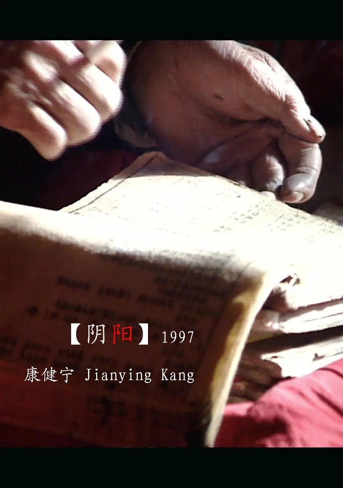

《阴阳》
剧情简介：
- 在宁夏回族自治区彭阳县崾岘乡陡坡村，有一位村民叫徐文章，他是一位风水先生，当地叫阴阳。由于地处山区比较干旱，农民的生活用水和农业用水都比较困难，徐文章就带着一家老小打井，但是两次打井都失败了。为了解决农民的用水问题，彭阳县水利局计划通过政府补贴的形式帮助农民修水窖，这样就可以把雨季的水蓄到窖里，然后用于农田的耕作，但是由于资金有限，并不是每户人家都能接受补贴，于是大伙就通过抓阄的方式来决定打窖的权利，窖打好了，水蓄上了，玉米也种上了，山里人的生活好象有了希望。
短评：
- 1.纪录片儿功能：见证风的方向、见证容颜的转变、见证梦想的起源、见证不同的悲欢离合、见证我们共同的历史、见证中国每一天的变革。
- 2.康建宁用摄影机对着那一片贫瘠啊，贫瘠的沙土黄山和树木，心里会想到什么呢？这部作品很好，片中的人令人心生敬意，尽管他们那么贫苦平凡。